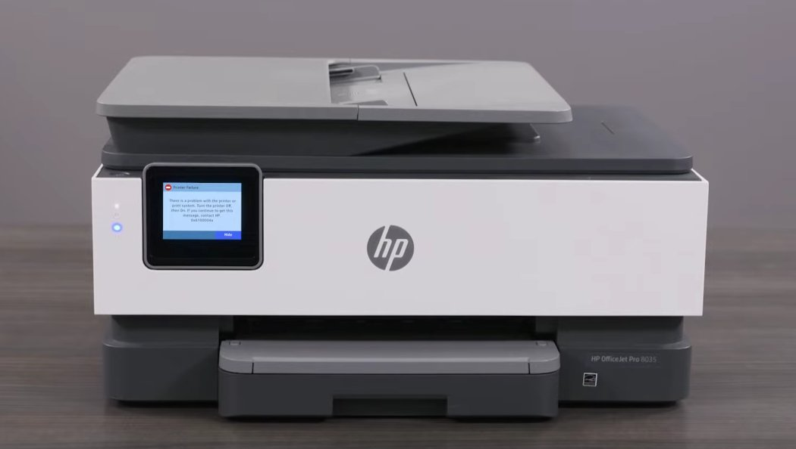
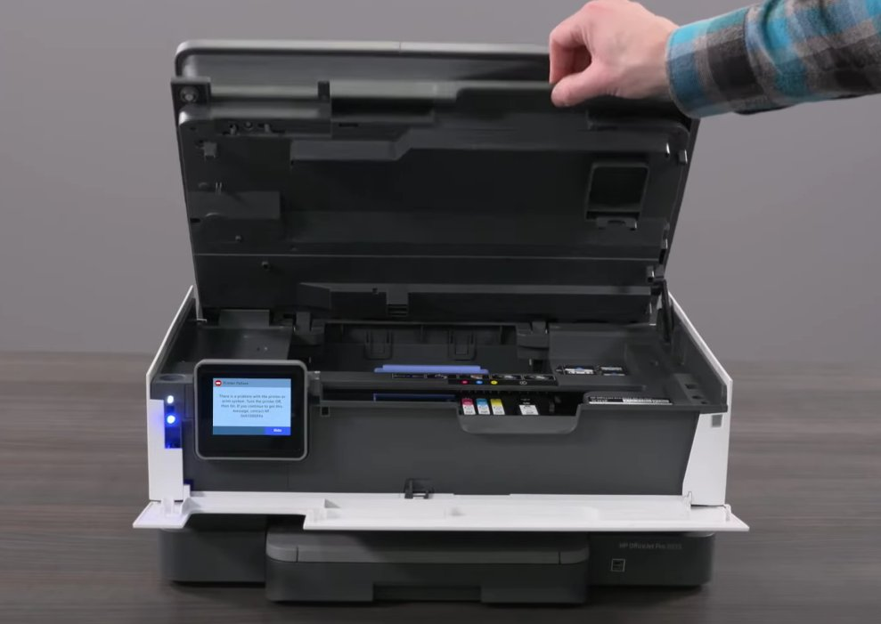
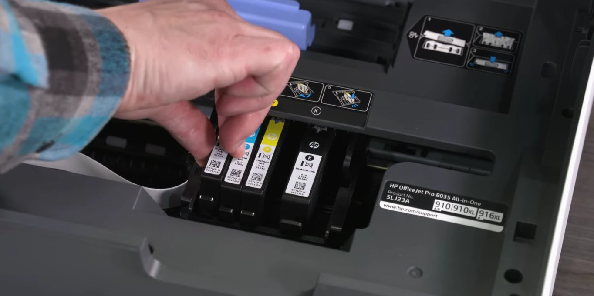

You Were Mid-Print, Weren't You?
There's nothing worse than being in the middle of printing something important — a work report, boarding passes, your kid's school project — and your HP printer suddenly freezes with a cryptic error code staring back at you: 0x6100004a.
You've probably already tried turning it off and on again. Maybe you've opened and slammed the lid a couple of times out of frustration (no judgment — we've all been there). The good news? This error is almost always fixable at home, without a service call, and without any special skills. You just need a little patience and the right steps.
This guide walks you through everything — from what this error actually means to how to fix it, starting with the simplest fix first.
What Does Error 0x6100004a Actually Mean?
In plain English, this error means your printer's ink carriage is stuck and can't move freely along its track.
The ink carriage is the little plastic sled inside your printer that holds the ink cartridges and slides back and forth during printing. When something blocks its path — a stray piece of paper, a torn fragment, a dried ink glob, or even a misaligned cartridge — the printer detects the blockage and throws up error code 0x6100004a to protect itself from damage.
Think of it like a car door warning light. It's not telling you the car is broken — it's telling you something is in the way. In most cases, once you clear the obstruction, the error disappears entirely.
Common culprits include:
- A stray piece of paper or tiny torn fragment in the carriage path
- A misaligned or improperly seated ink cartridge
- A dried ink deposit on the carriage rail
- A dirty or smudged encoder strip
- An outdated firmware version with a known carriage bug

Tools You'll Need
- A flashlight (to spot hidden paper fragments inside the printer)
- Clean, lint-free cloths or paper towels
- Rubber gloves (optional, to avoid ink stains)
- A can of compressed air (optional, for dust buildup)
- About 10–20 minutes of your time
No screwdriver, no technical background, no special tools needed for most fixes.
Step-by-Step Fixes (Easiest to Hardest)
Work through these in order. Most people fix the issue at Fix 1 or Fix 2 — so don't jump ahead until you've tried the simpler options first.
- With the printer powered on, unplug the power cord directly from the back of the printer (don't just use the power button).
- If the printer is connected to a power strip or surge protector, unplug it from that too.
- Wait a full 60 seconds — this clears the printer's internal memory and resets the carriage motor.
- Plug the power cord back in directly to the wall outlet.
- Power the printer back on and wait for it to fully initialize.
- Try printing a test page.
This step alone resolves the error about 20% of the time. If the error comes back, move on.
- Open the printer's front access door or cartridge access area.
- Using your flashlight, slowly scan the entire inside of the printer — along the paper path, under the carriage, and along both sides of the frame.
- If you spot any paper, remove it gently with both hands, pulling slowly and evenly in the direction of the paper path. Never yank or tear it.
- Check for small torn pieces — even a tiny scrap the size of your thumbnail can jam the carriage.
- Also check the rear of the printer. Many HP models have a rear access panel that pops off — remove it and look for paper stuck at the back rollers.
- Once cleared, close all panels, restart the printer, and test.
- After unplugging, open the front access door and wait 30 seconds for any residual power to discharge.
- Gently push the ink carriage to the right side of the printer — you should feel it slide smoothly along the rail.
- Then slide it to the left side. It should glide with minimal resistance.
- If the carriage feels stiff or catches, do not force it. Look for what's blocking it — torn paper, a hardened ink drip, a misaligned cartridge, or a foreign object.
- Remove any visible obstruction with your fingers or tweezers.
- Slide the carriage gently back and forth a few times to confirm it moves freely end to end.
- Close the access door, plug the printer back in, and power it on.

A cartridge that isn't fully clicked into place can cause the carriage to sit at a slight angle, triggering the jam error.
- Open the cartridge access door.
- Wait for the carriage to slide to the center (if it moves — if not, gently push it there manually after unplugging).
- Press down gently on each cartridge until you hear or feel a firm click.
- If a cartridge looks damaged, cracked, or has visible ink leaking from its side, remove and replace it.
- Close the door, restart, and test.
If the carriage moves but the error keeps returning, the issue may be a dirty carriage rail or a smudged encoder strip — the thin, clear plastic strip behind the carriage that tells the printer where the carriage is.
- Unplug the printer.
- Using a lint-free cloth very lightly dampened with water (not soaking wet), wipe along the steel carriage rail.
- Locate the thin, clear plastic strip running horizontally behind the carriage. This is the encoder strip — handle it extremely gently.
- Using a dry part of the cloth, lightly wipe the encoder strip from left to right to remove any ink mist or dust.
- Never bend or crease the encoder strip — it is delicate and easily damaged.
- Allow everything to dry completely before plugging the printer back in.

If all physical fixes have failed, a firmware bug may be keeping the error stuck in the system.
- On your computer, go to hp.com/support and search for your exact printer model.
- Download and run the latest firmware update.
- Alternatively, uninstall your printer's software from your computer, restart, then reinstall the latest driver from HP's official site.
- After updating, restart both your printer and computer.
When to Call a Professional
Most of the time, one of the steps above will get you back to printing. But contact HP Support or visit a repair center if:
- The ink carriage physically won't move at all after unplugging and clearing all visible obstructions — the carriage belt or motor may be broken.
- You hear a grinding noise when the printer powers on.
- There is visible damage inside the printer — a cracked rail, broken plastic, or a snapped encoder strip.
- The error returns immediately every single time, even after completing all steps with a fresh set of cartridges.
- Your printer is still under HP's warranty — skip the DIY and contact HP directly, as repairs may void your coverage.
HP's support line is available at 1-800-474-6836, and many HP printers also have live chat support built into their software dashboard.
Quick Summary
| Fix | Difficulty | Time Needed |
|---|---|---|
| Restart the printer | Very Easy | 2 min |
| Clear paper jams | Easy | 5 min |
| Manually free the carriage | Easy | 5 min |
| Reseat ink cartridges | Easy | 3 min |
| Clean rail & encoder strip | Moderate | 10 min |
| Update firmware / drivers | Moderate | 15 min |
Final Thoughts
Start at the top of the list and work your way down. In most cases, you'll be printing again long before you reach the bottom. The 0x6100004a error sounds alarming, but it's almost always a physical obstruction or a loose cartridge — both of which you can fix in minutes without any tools.
If this guide helped you fix your printer, consider bookmarking it for next time — carriage jam errors have a habit of coming back when you least expect them.